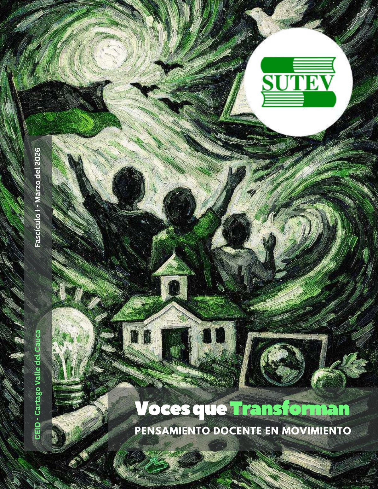
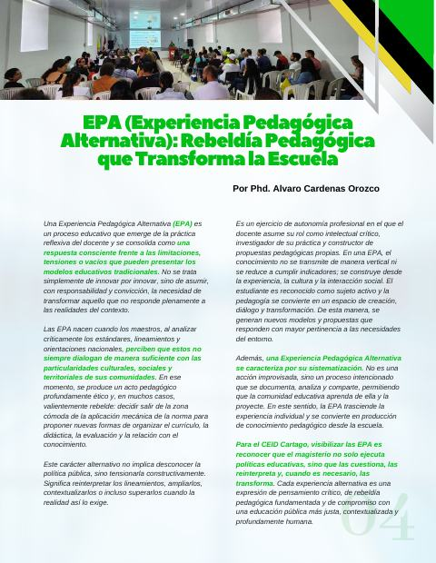
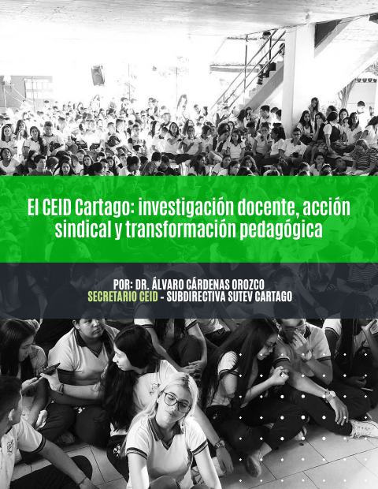

Voces que Transforman, Fascículo 1
Pensamiento docente en movimiento: seis experiencias de aula del Norte del Valle, una introducción a las EPA y un balance del CEID Cartago.

Leer el fascículo
PDF · 23 págs. · 14,6 MB«Voces que Transforman» es la revista del CEID Cartago. Su primer fascículo, de marzo de 2026, lleva por lema «Pensamiento docente en movimiento» y abre un espacio para que los docentes sistematicen y publiquen su práctica.
La revista nace para honrar y publicar las experiencias pedagógicas alternativas (EPA) que el CEID acompañó para el 3.er Congreso Pedagógico Nacional, de las que FECODE seleccionó tres. Este fascículo reúne seis relatos de aula, una introducción a las EPA y un balance del CEID.
Participar en el próximo fascículo
La revista invita a los docentes a enviar sus experiencias, artículos y reflexiones para los próximos fascículos, y a los directivos a motivar a sus equipos a sistematizar sus prácticas.
La revista y el Estatuto
El literal k del artículo 52 del Estatuto del SUTEV encarga a la secretaría la revista Correo Pedagógico, con edición semestral en formato digital. «Voces que Transforman» es la revista local del CEID Cartago; su periodicidad está por definir.
En este fascículo
8 artículos
Pág. 4 · 1 pág.EPA (experiencia pedagógica alternativa): rebeldía pedagógica que transforma la escuelaAlvaro Cardenas OrozcoQué es una experiencia pedagógica alternativa y cómo transforma la práctica educativa mediante innovación crítica, contextualización territorial y construcción colectiva del conocimiento.Leer el artículo → Pág. 5 · 2 págs.Educación inicial con identidad territorial: una experiencia pedagógica alternativa que une a CartagoNatalia Córdoba ToroCómo maestras de preescolar unieron esfuerzos para transformar la educación inicial desde la identidad territorial y la construcción colectiva.Leer el artículo →
Pág. 5 · 2 págs.Educación inicial con identidad territorial: una experiencia pedagógica alternativa que une a CartagoNatalia Córdoba ToroCómo maestras de preescolar unieron esfuerzos para transformar la educación inicial desde la identidad territorial y la construcción colectiva.Leer el artículo → Pág. 7 · 2 págs.Sembrando futuro: ciencia, territorio y rebeldía ruralVíctor Manuel BetancourthCómo una escuela rural transforma el aprendizaje al integrar agro, ciencia y tecnología para dignificar el territorio y proyectar futuro.Leer el artículo →
Pág. 7 · 2 págs.Sembrando futuro: ciencia, territorio y rebeldía ruralVíctor Manuel BetancourthCómo una escuela rural transforma el aprendizaje al integrar agro, ciencia y tecnología para dignificar el territorio y proyectar futuro.Leer el artículo → Pág. 9 · 2 págs.ECOhilo: ciencia, conciencia y transformación desde el reciclajeErika Andrea Quintero García y Jhoan David Bermúdez CardonaCómo estudiantes convierten residuos plásticos en innovación científica, con conciencia ambiental, liderazgo juvenil y transformación sostenible desde la escuela.Leer el artículo →
Pág. 9 · 2 págs.ECOhilo: ciencia, conciencia y transformación desde el reciclajeErika Andrea Quintero García y Jhoan David Bermúdez CardonaCómo estudiantes convierten residuos plásticos en innovación científica, con conciencia ambiental, liderazgo juvenil y transformación sostenible desde la escuela.Leer el artículo → Pág. 11 · 2 págs.ConectaTE: escuela pública en resistencia científicaAlvaro Cardenas OrozcoCómo una escuela pública convirtió la ciencia y la tecnología en herramientas de emancipación.Leer el artículo →
Pág. 11 · 2 págs.ConectaTE: escuela pública en resistencia científicaAlvaro Cardenas OrozcoCómo una escuela pública convirtió la ciencia y la tecnología en herramientas de emancipación.Leer el artículo → Pág. 13 · 2 págs.Sendero interactivo: aprender caminando entre ciencia, naturaleza y comunidadMaría Sofía Vélez TasamaUn sendero donde la ciencia, la cultura y la naturaleza se encuentran para enseñar a cuidar el territorio y la vida.Leer el artículo →
Pág. 13 · 2 págs.Sendero interactivo: aprender caminando entre ciencia, naturaleza y comunidadMaría Sofía Vélez TasamaUn sendero donde la ciencia, la cultura y la naturaleza se encuentran para enseñar a cuidar el territorio y la vida.Leer el artículo → Pág. 15 · 3 págs.Laboratorio vivo: cuando la escuela aprende a cuidar el planetaJuan Camilo García BaronaCómo una escuela transforma el aprendizaje en acción ambiental y demuestra que educar también es aprender a cuidar el planeta.Leer el artículo →
Pág. 15 · 3 págs.Laboratorio vivo: cuando la escuela aprende a cuidar el planetaJuan Camilo García BaronaCómo una escuela transforma el aprendizaje en acción ambiental y demuestra que educar también es aprender a cuidar el planeta.Leer el artículo →
Pág. 18 · 4 págs.El CEID Cartago: investigación docente, acción sindical y transformación pedagógicaAlvaro Cardenas OrozcoLa gestión del CEID Cartago: investigación docente, acción sindical y transformación pedagógica, explicada a los afiliados.Leer el artículo →